Exporters
Exporters Extensions
Extensions Interface
Interface Chowdren
Chowdren ClickStore
ClickStore Bug Tracker
Bug Tracker| |
This is an archive. |
| See the new ClickWiki at https://clickwiki.github.io. This version is just an archive for the purposes of migrating content to the new structure. |
Application Properties
Contents
- 1 Settings
- 2 Window
- 3 Runtime Options
- 4 Values
- 5 Events
- 6 About
- 7 Windows
- 8 Android Options
- 9 XNA Options
- 10 iOS Options
- 11 HTML5 Options
- 12 Universal Windows Platform
Settings
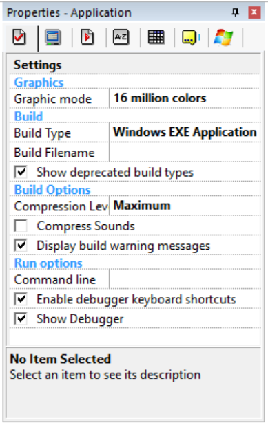
This folder contains all the properties to build the application.
{kind=link}
Graphics
Graphic mode
Choose the graphic mode used by your application. 256 colors save a lot of memory, but restrain the number of colors displayed by the application.
Build
Build type
Indicates the type of application to build when you select Build application from the file menu. Can be a Windows "Stand alone application" (a simple EXE file), a Windows screen saver (an SCR file), a sub-application (.CCN) to use in a sub-application object, or other types of applications (it depends on the modules installed on your machines).
Build filename
Enter the name of the file to build. If you do not enter anything, the name of the application is used and the required extension is added (SCR, EXE, CCN, JAR, etc).
Image filters
Indicates the image filters to include in the executable file of your application. If the Automatic option is selected in the Image Filters dialog box, then all the filters will be included if your application contains objects that display graphic files. In order to reduce the size of your stand-alone applications or screen savers, we recommend you to unselect the Automatic option and select only the filters you use.
Sound filters
Indicates the sound filters to include in the executable file of your application. If the Automatic option is selected in the Sound Filters dialog box, then all the filters will be included if your application contains samples. No filter will be automatically included if your application plays only external sample files. In any case, we recommend you to unselect the Automatic option and select the filters you need, in order to optimize the size of your application and/or to include the needed filters.
Install Settings
Opens the Install Settings dialog box and allows you to build an install program for your application and the external files it uses.
Build Options
Compression level
Choose between Normal and Maximum. Maximum might be a little slower to build.
Compress sounds
Use this option to gain space in your built application. If this option is selected, the uncompressed WAV samples of your application will be compressed to ADPCM format, reducing their size by 2 or 4.
Display build warning messages
Uncheck this option if you want to hide the warning messages that are displayed when you build an application that contains events or objects that are incompatible with the build type.
Include external files
Includes in the built file all the external files referred to by the events or by any object. This option is very handy if you want to create one EXE file that contains everything. Upon runtime, the files are extracted to a temporary folder, and all the pathnames that refer to the files are relocated to the temporary folder. Note: this option doesn't include the files whose filename is calculated with an expression in the events.
Compress the runtime
By default, the runtime is compressed and extracted to a temporary folder when the stand-alone application starts. This can cause problems with applications that access the Internet, especially if a firewall is installed on the machine. For such an application, unselect this option so that the runtime is not compressed and always keeps the same pathname when you run it. Note: uncompressing the runtime will add about 300 Kb to the size of the stand-alone application.
Windows Vista Options
Execution Level
This option allows you to select the privilege level of your application when it's executed on Windows Vista: None: in this mode, the application is executed by Vista in "compatibility" mode, i.e. when you create a file in system directories like the Program Files directory, Vista creates it in a directory in the current user's Application Data directory and displays it as if it was in the system directory. This mode is used to keep compatibility with old applications that write to their install folder or to the HKEY_LOCAL_MACHINE\Software registry key. You should not use it in new applications designed for Windows Vista. As invoker (default): in this mode, the application is executed with the privileges of the current user (or the calling application if the application is launched by another one). On Vista usually with normal privileges you are not allowed to write to system folders (Program Files, Windows, etc.) or to registry keys not located in the HKEY_CURRENT_USER folder. This mode is the preferred mode for Vista applications. As administrator: in this mode, Windows Vista will ask the user to confirm s/he wants to run your application, and if so will run it with elevated privileges, i.e. your application will be able to write to system folders and anywhere in the registry. This mode should be reserved for installers or applications that really need to access system folders. Note: you should sign your application with a certificate so that the confirmation screen displays this application was made by you and can be trusted. Note: when you run your application from MMF2, it's always executed with the "As invoker" option. If you need to run your application in administrator mode from MMF2, then exit MMF2 and run it as administrator. The MMF2 runtime will be executed in administrator mode too.
Run options
Command line
Enter here the options you wish to pass to the application when you run it from the editor. You can use the standard Clickteam Fusion 2.5 options like /NOF to prevent the application to switch to full screen, /DIB to force the application to use the standard graphic mode, etc. Of course, these options won't be saved in the stand-alone applications, they are only used when you run your application from the editor.
Enable Debugger Shortcuts
Allows you to enable the keyboard shortcuts of the debugger. Unselect this option if the debugger shortcuts conflict with yours.
Show Debugger
Allows you to show or hide the debugger.
Window
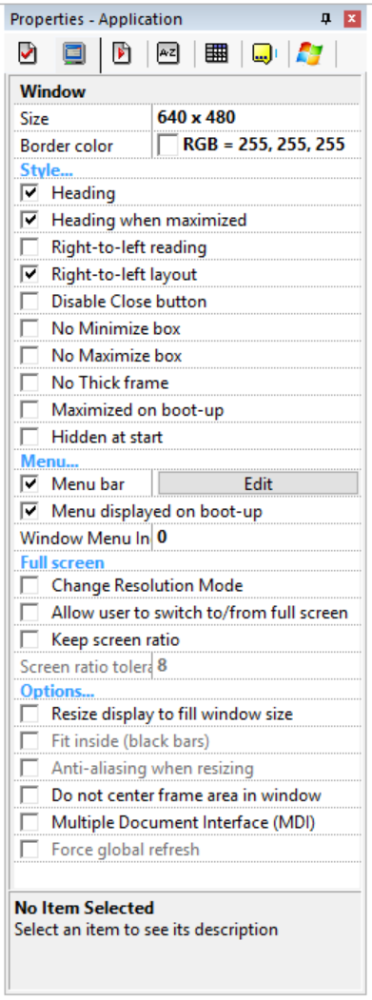
This folder contains the properties of the window in which the application is displayed.
{kind=link}
Size
Enter the size of the application window. You can choose between preset sizes or enter your own. Warning, do not confuse the size of the window with the size of the frame!
Border color
Enter the color of the border drawn around the frame if the frame does not fill the window entirely.
Style
Heading
Check this option and a title bar will be displayed on the top of the window.
Heading when maximized
Check this option to maintain a title bar when the application window is maximized
Disable close button
Check this option and the close button of the window will not work. Warning, your application must contain a way out!
No minimize box
Check this option to disable the minimize box.
No maximize box
Check this option to disable the maximize box.
No thick frame
Check this option and the application window will be drawn with a thin line instead of a thick line. If this option is selected, the window won't be resizable.
Maximized on boot-up
Check this option and the application will be maximized on boot-up.
Hidden at start
Check this option and the application will be hidden on boot-up.
Menu
Menu bar
Check this option to include a menu in the application. A click on the edit button opens the Menu editor.
Menu displayed on boot-up
If this option is checked, the menu bar is displayed in the window when the application starts.
Used when creating an MDI application. Indicates the index of the menu where the list of MDI child windows is inserted.
Full screen
Change resolution mode
When running the application, the resolution mode of the computer will change to match as best as possible the size of the window. For example, if your window is 640x480, the resolution mode will change to 640x480. Use this option to create full-screen applications.
Allow user to switch to/from full screen
If this option is selected, the menu of the application will contain an entry to allow the user to switch between full-screen mode and windowed mode.
Keep screen ratio
In full-screen mode, the resolution mode of the computer will change to match as best as possible both the size of the window and the width/height ratio of the current screen. This option avoids your application window to get distorted on wide screens.
Screen ratio tolerance
This option allows you to define a tolerance for the "Keep screen ratio" option. This tolerance is a percentage of the current screen ratio. It allows you to switch to a screen resolution close to the window size of the application even if its width/height ratio is not strictly identical to the current screen ratio. Quick example: Suppose that the current resolution of the user's machine is 1440x900 (ratio = 1440/900 = 1.6), the window size of your application is 640x400 (ratio = 1.6) and the full-screen resolutions available on the user's machines are: 640x480 (r=1.33) 720x480 (r=1.5) 720x576 (r=1.25) 800x600 (r=1.33) 1024x768 (r=1.33) 1152x864 (r=1.33) 1280x720 (r=1.77) 1440x900 (r=1.6) As you can see, the only resolution with the same ratio is 1440x900. So if you want to execute your application in a screen resolution with the exact same ratio, you have no choice, your application will be played in a small 640x480 window in a big 1440x900 screen. If you set a tolerance of 8%, then any ratio between 1.47 and 1.72 will be considered as acceptable (between 8% below and above 1.6). So in this case, the 720x480 resolution will be chosen as it fits in the tolerance interval and is the smallest resolution greater than the window size of your application. The window of your application will be slightly distorted but this distortion is much less than if it was executed in 640x480 full-screen mode.
Options
Resize display to fill window size
Will resize the content of the application window to match the window size. Basically, there will not be any borders. This option might slow down the display.
Do not center frame area in window
If selected, the frame area will begin in the top/left of the window. If unselected, the frame area will be centered in the window.
Multiple document interface (MDI)
Check this option to make a Multiple Document Interface application. An MDI application allows you to open several windows child of the main application. Practically, the first frame of your application is used to handle the background window and creates a new sub-application object with the "MDI Child Window" option each time it wants to create a new child window. An MDI application can also have docked toolbars, this is done with sub-applications with a Docked option.
Runtime Options
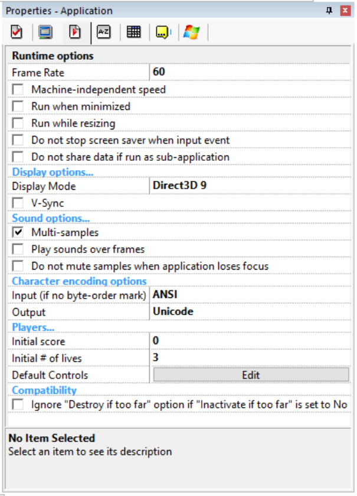
This folder contains all the options to make the runtime work.
{kind=link}
Frame rate
Enter the number of frames per second (FPS) of the runtime, basically the animation speed of the application when it runs. From 1 to 1000. The default setting is 50, 100 will double the speed of all the objects on the screen, 1 will make a very slow application, etc.
Machine independent speed
Use this option to maintain the speed of the runtime on slower machines. This option makes the runtime skip the display of the frame when it is not running at the given frame rate. As display operations are usually the more time-consuming ones, this allows the application to keep its frame rate even on slower machines.
Run when minimized
As a default, the application is paused when minimized. Check this option and it will continue to run when minimized.
Run when resizing
Check this option and the application will not stop when you resize or move the window.
Do not stop screen saver when input event
As a default, a screen saver quits as soon as an input event (keyboard, mouse) occurs. With this option, it will not quit. It is up to you to test for input events in your application.
Check this option if you want to prevent the parent application to access or modify the global values, global strings, scores or live numbers of your application when it is run as sub-application.
Display options
Display mode
The Standard display mode uses the default drivers to display the image. The Direct3D modes use Direct3D and are much faster, but not everything is compatible with these modes. Refer to the HWA section in this documentation for more information about the Direct3D modes.
V-Sync
If selected, will synchronize the application with the display. Usually, provides a smooth display. As the monitor refresh rate is usually between 6O fps and 90 fps, it's a good idea to set the frame rate of the application to 90 or 100 when you select this option.
Enable visual themes
Allows visual themes in the application.
Sound options
Multi-samples
If this option is checked, up to 32 samples can be played at the same time. If not only one.
Play sound over frames
Check this option to continue playing a sound or a music from one frame to another. For example, you might want to have a music playing while loading the next frame of your application.
Do not stop samples when application loses focus.
As a default, all the samples are stopped when the application loses the focus (when another application is activated). Check this option and the samples will continue playing.
Players
Initial score
Defines the initial score of all the players, when the game starts.
Initial # of lives
Defines the initial number of lives of all the players when the game starts.
Default controls
Click on the edit button to define and edit the player controls of the game.
Values
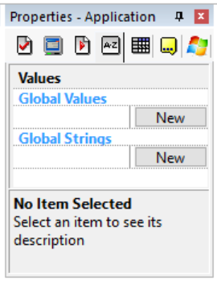
The values folder contains the default values of the global strings and global values. As a default, global values are equal to 0 and global strings are equal to "". With this property folder, you can change this and define default values for these items. You can also change the names of the values.
{kind=link}
Global values
Click on New to define a new global value. Double click on the name of the value to edit its name: very handy to make your application clearer. Click on the number to change it. You can also right-click the name of the value and select Rename to rename it, or Delete to delete it. Note: you can delete only the last Global Value.
Global strings
Click on New to define a new global string. Double click on the name of the string to edit its name: very handy to make your application clearer. Click on the edit zone to change the string. You can also right-click the name of the string and select Rename to rename it, or Delete to delete it. Note: you can delete only the last Global String.
Events
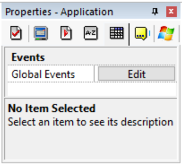
The events folder contains only one property: the Global Events. Global events are a list of events that is global to the entire application.
{kind=link}
Global events
Click on the button to open an event editor and edit the global events.
About
{kind=link}
Name
This property contains the name of your application. Note this name is not the filename, it is the internal name of the application. This affects the name in the Workspace Toolbar, as well as the window title.
Icon
Shows the icon of the application. Click on the Edit button to open the picture editor. You will notice that the icon is duplicated in different graphic formats : 256x256, 128x128, 48x48 pixels, 32x32 pixels and 16x16 pixels, in true colors, 256 colors and 16 colors. You must draw your icon in all the resolutions. When you build your application, Clickteam Fusion 2.5 will take the icons that are needed for the current build type. Note: only the true color images can have an alpha channel. These images are displayed under Windows XP or above. The 256 color images are displayed under the older versions of Windows when the desktop is in high or true color mode. The 16 color images are displayed when the desktop is in 256 colors. Trick: if you want to reset the icon to the default images, press SHIFT+CONTROL when clicking the Edit button.
Filename
This property contains the filename of the application.
Documentation
Help file
This line contains a pointer to the help file of your application. This help file will be displayed when the user presses Help.
Information
Author
Enter your name here.
Copyright
Enter a copyright line here.
AboutBox text
Enter a text to be displayed in the about-box of your application.
Description
Enter a short description of your application.
 Developer only. Will show "Clickteam Fusion Stand Alone Application" if exported in Standard.
Developer only. Will show "Clickteam Fusion Stand Alone Application" if exported in Standard.
Company
Enter the name of your company (if it exists).
 Developer only. Will show "Clickteam" if exported in Standard.
Developer only. Will show "Clickteam" if exported in Standard.
Version
Enter the version number of this application.
 Developer only.
Developer only.
Windows
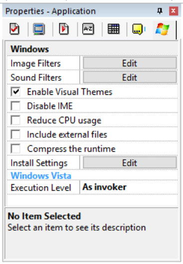
No info available, please add some!
{kind=link}
Android Options
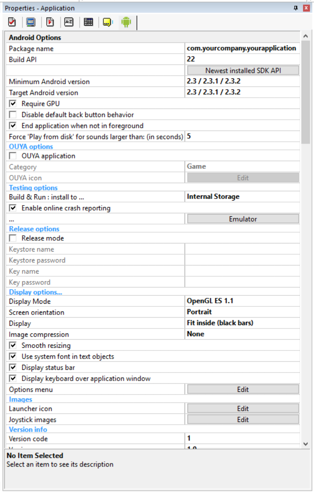
No info available, please add some!
{kind=link}
XNA Options
Windows/Xbox
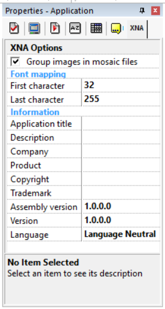
No info available, please add some!
{kind=link}
Phone
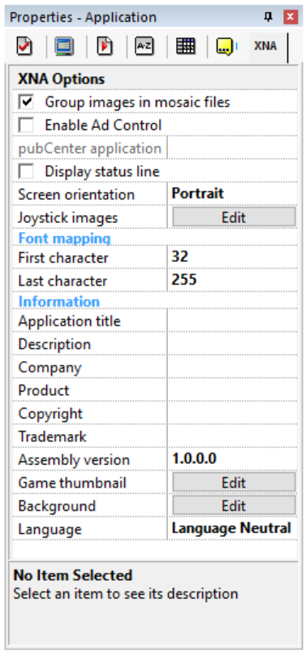
No info available, please add some!
.png){kind=link}
iOS Options
Application (cci)
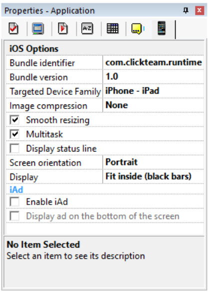
No info available, please add some!
.png){kind=link}
Xcode Project
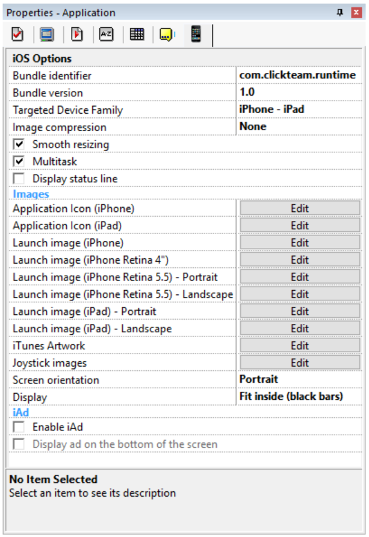
No info available, please add some!
.png){kind=link}
HTML5 Options
Full Version
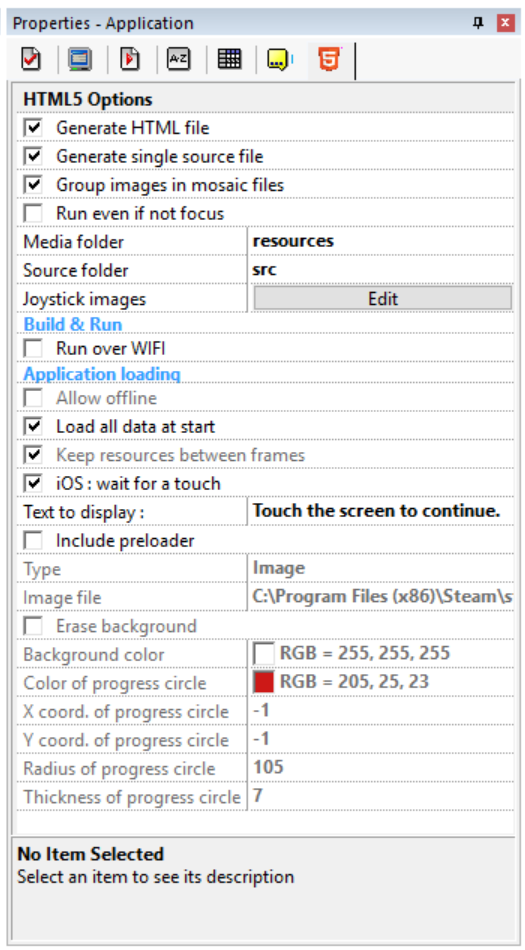
No info available, please add some!
{kind=link}
Limited Version
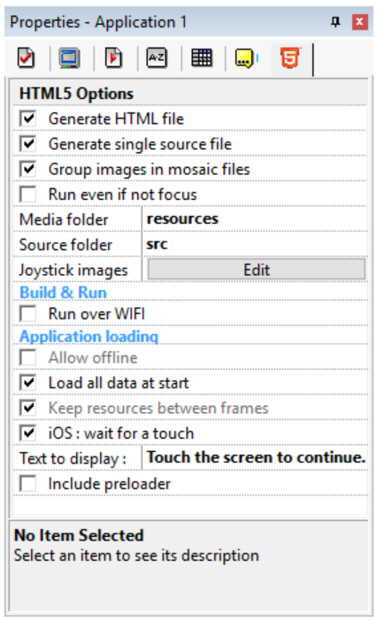
No info available, please add some!
.png){kind=link}
Universal Windows Platform
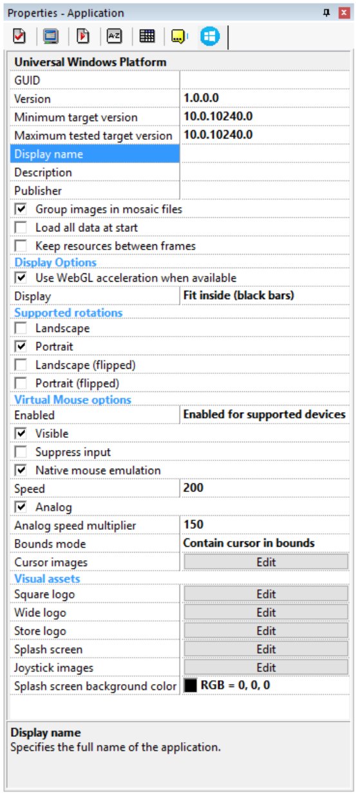
No info available, please add some!
{kind=link}